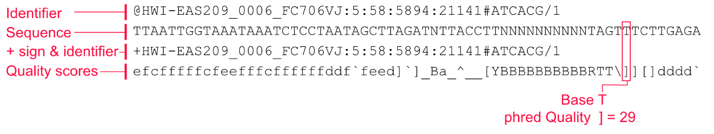

Analysis and Quality Control of Sequence Data
Contents
Analysis and Quality Control of Sequence Data#
This Week’s Work#
You have already sequenced your bacterial DNA preparation last term. The nanopore data has been base called turning the current fluctations into predictions of nucleotides. These have been written to .fastq files incorporating the sequence and the base quality (confidence).
In this next section of work you need to characterise this data to determine statistics like: how many files, how many sequences in each, how many sequences in total, lenghts of sequences etc etc
Once this is done we can discuss the data and carry out some quality control (QC) to remove sequences not meeting our data standards.
We will then be able to assemble this data into a bacterial genome
Next you will need to characterise this genome just as you did the original sequences asking perhaps how many contigs are present, how long they are, how many sequence reads they represent.
Finally you should prepare figures and tables from your charcterisations as these will be a very important part of your Results section in the manuscript.
Competencies#
You have already uploaded your first competency, the introduction to the unix command line notebook PDF demonstrating your competency at data manipulation.
The remaining competency is to produce appropriate tabular and/or graphical descriptions of your sequence and assembly data.
Please take the opportunity to get 1-on-1 feedback on your work at the end of the week.
The format of these is for you to determine. I would imagine that most students would have approx 2 tables and 1-2 figures on 1-2 pages. You might want to produce these like paper figures/tables with good legends, then they will be ready to go directly into your final manuscript if you wish.
1 Characterising Your Data#
Many of the skills you will need to characterise you sequence data you have already deployed in the “introduction to the unix command line” sessions.
1.1 fastq format files#
You will need to read and understand the following section
fastq is a standard file format similar to fasta. It is used for data coming off of seqencing machines and is typically later transformed into the slightly simpler fasta file format.
fastq files contain a base quality value associated with each nucleotide position. This is sometimes called a Phred quality score. This allows the researcher to quality control the sequencing data by removing sequences with too low an average score, or trimming sequences when the score falls below a threshold value.
Fasta files represent each sequence record on 2 lines: the header beginning with a > and a new sequence line following it. Each fastq file records a sequence record on 4 lines

Figure 7.2 from Akalin “Computational Genomics with R”
@<identifier and expected information>
<sequence>
+<identifier and other information OR empty string>
<quality>
Line 1: this is a header line beginning with @ and followed by an identifier “HWI-EAS209_006_FC706VJ” and other information
Line 2: the sequence
Line 3: begine with + and marks the end of the sequence data. Might also have the same identifier as line 1
Line 4: symbols encoding the quality value of each nucleotide in line 2. These are Phred quality scores and represent the probability of a wrong base call. Each ascii symbol represents a specific numerical value in order to save space. If you wish, you can look up the symbols and quality scores at this link
Here is a brief summary of Phred quality scores. Note that the numbers are logarithmic so Q30 is 10 times better than Q20
Phred Error-rate Accuracy
10 1 of 10 90% # very low quality
20 1 of 100 99% # minimum quality for many tools
30 1 of 1000 99.9% # reasonable good quality
40 1 of 10000 99.99% # high quality
50 1 of 100000 99.999% # very high quality
1.2 Documenting your data#
All science must clearly describe what has been done to what data in order to produce the results. It is essential that you know your data, and you will now characterise it.
Questions you might ask include:
How many fastq files do you have?
How many sequences are present in each file?
How long are the sequences on average, and what is their total length?
Fortunately you have already developed many of the big-data skills to work this out quickly and accurately.
Although you already know more than one way to count files and sequences I would suggest best-practice is to make text files where key data is recorded. That way it will be easy to do further analysis, and easy to create tables.
1.2.1 Create a list of fastq file names#
If you need to look back at the syntax you should check out “intro_to_unix_command_line.ipynb” section 5.3
Write an echo command to write the filename of every .fastq file to a new text file with an appropriate name
Use word count to determine how many lines this file has, which should be the same as the number of files
1.2.2 Counting the number of sequence records in a fastq file#
For each of these files you can now count the number of fastq sequence records they contain. There are several ways you could do this, but a simple one is to understand that each fastq sequence record is 4 lines, so counting the lines and dividing by 4 should give the answer.
You previously saw how to do this for a fasta file with echo. The fastq files provided for you are slightly more complicated, but its the same approach. The 2 examples below should be mostly familiar but with a few additions:
#yourfile.fastq
echo $(cat yourfile.fastq|wc -l)/4|bc
#yourfile.fastq.gz
echo $(zcat yourfile.fastq.gz|wc -l)/4|bc
The $ is used to keep track of the value found.
wc -l counts the number of lines
The final |bc pipes the data to a command line calculator, required because we’re dividing by 4
zcat is the same as cat but works on compressed data like .fastq.gz
Give it a go and see if you can find the number of records in a fastq file
1.2.3 scaling the approach#
Good work, you now know the number of sequences in your fastq file. The problem is that you have a lot of these and it is tedious and error-prone to repeat this so many times. Fortunately you already know how to automate it by using wildcards!
Modify the echo command from before to process all the .fastq.gz files in the directory.
Good, but in order to record and preserve the data you should write this to a file
1.2.4 Formatting the output#
Excellent. The problem you have is that your file names and their sequence record counts are now in different text files. You really need these together so that you can construct a table. Fortunately you already know how to do this!
In section 5.3 of the previous notebook it taught you how to introduce tabs (\t) and line breaks (\n). You could now write a command that uses echo to write the .fastq.gz filename to a new file, followed by a tab, followed by the number of sequence records in that file, followed by a newline.
You could (optionally) give that a go below, I’m sure some of you are up for the challenge! I’d be interested to see how you do it.
1.2.5 seqkit an easier way to characterise sequence data#
The echo command is very powerful, but is starting to get very complex, and complexity can lead to undetected errors. Bioinformaticians therefore try not to reinvent the wheel each time they work, and there are programs which wrap all the complexity up and make it easier to operate on your data.
We are going to use the program seqkit stats which will survey and report for us. You can treat it like any of the other programs you have used (ls, cat, grep, echo) where you first type the program name and give flags to modify its behaviour and control where it writes the output.
You can find details of the seqkit stats flags and usage at this link
seqkit stats *.fastq.gz should provide you with an interesting table
You can use > filename.txt to direct its output from the screen to a file, and the -T flag separates by tabs, sometimes allowing you easier formatting at a later date, perhaps in Excel.
The total amount of sequence data you are processing (number of base pairs) is then just the total of the sum_len column values.
You now have answers to the 3 questions from section 1.2 above. Make sure that you document these.
2. QC of the data#
Is the data any good? What if 10% is really bad and including it messes everything up? What do we mean by ‘bad’ and what sort of QC can improve our assembly?
The goal of this QC section is to quality control the data so that we are confident we have the best assembly we could have generated with the methods we have chosen.
We could have a long conversation about the meaning of “bad” data, but here it practically falls into 2 categories:
sequences with very low Phred quality scores
sequences that are very short
We are going to use the fastp program to filter sequences by quality score and by length.
Chen S, Zhou Y, Chen Y, Gu J. fastp: an ultra-fast all-in-one FASTQ preprocessor. Bioinformatics. 2018;34: i884–i890. doi:10.1093/bioinformatics/bty560
2.1 Filtering by read quality and length#
Look at the fastp help page and try to write a command to filter by quality and length. NB you have single-end data not paired-end (that is for short Illumina sequencing).
What and where is you input data? Remember to use the -i flag to identify this.
Where do you want your output data to be written? Remeber to specify it with the -o flag and then a directory name and location. If you output name ends with .gz your data will be nicely compressed for you. You will want to distinguish it from your raw data of course. Maybe create a directory called seqs-qc or something similar. The command to make a new directory is mkdir so mkdir data/seqs-qc could be what you need.
We wish to exclude all sequences less than 500bp as these are not high quality data.
You can use the -l flag to say that the length required is 500
You may also want to add the -h flag to specify a report should be written, see below.
Write your command below and discuss among yourselves and with one of us. Do not actually run fastp on your data until we have checked it.
2.2 Re-characterising the data#
Now that you have applied QC criteria to the data how has it changed?
Can you use seqkit stats again to produce a simple table of your sequences? Remember the data is in a new dierctory.
fastp also produces a graphical and tabular report on what it has done, these are sometimes a little harder to interpret but see what you can make of it first and ask for help. The fastp flag to write an html report is -h
Competencies#
Your final competency this week is to produce appropriate tabular and/or graphical descriptions of your sequence and assembly data.
You have already tablulated your data calculating how many files, how many sequence records, lengths and some other statistics. You have done this before and after QC. What would be an appropriate way to show this in your manuscript? Discuss with your colleagues and throw around a few ideas, make a plan for how to do this.
In order to get marks for the competency you need to be clear and concise and focussed. Don’t produce 10 pages that are hard to read a couple of simple tables with legends are fine. If you want to do figures too, great.
For your final manuscript you may want to polish things up a bit. Don’t forget that the Department provide R stats help for all students, so if you are struggling with diagrams then there is a Teams group to help, please ask.
Extra Reading#
Altuna Akalin. Computational Genomics with R. Free online book. https://compgenomr.github.io/book/